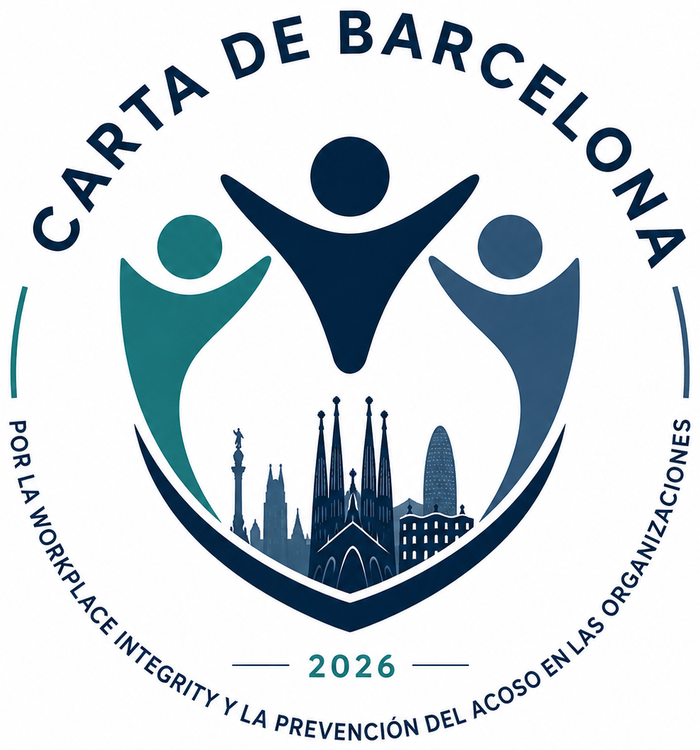

Inicio / Carta de Barcelona
Carta de
Barcelona
Por la Workplace Integrity
Una declaración de principios para promover organizaciones capaces de proteger la dignidad de las personas en el trabajo.

El sello de la Carta de Barcelona.
Las organizaciones adheridas reciben el sello oficial de la Carta de Barcelona 2026, símbolo público de su compromiso con la prevención del acoso y la protección de la dignidad humana en el trabajo.
Más allá de diferencias sectoriales o territoriales, una idea sencilla: la dignidad humana debe ocupar una posición central en cualquier organización.
La prevención del acoso y la protección de los derechos fundamentales son responsabilidades compartidas por organizaciones, instituciones y profesionales.
La Carta invita a expresar públicamente el compromiso con entornos de trabajo libres de acoso, más seguros, respetuosos e íntegros.
Lo que la Carta afirma.
Las organizaciones desempeñan una función esencial en la protección de las personas.
La dignidad humana debe ser un valor central en la toma de decisiones.
La prevención del acoso requiere una actuación activa, responsable y permanente.
Las organizaciones deben reforzar su capacidad de prevenir, detectar y responder.
La Workplace Integrity es una aspiración legítima para toda organización comprometida.
El Labour Compliance refuerza la responsabilidad y reduce los riesgos asociados.
Abierta a quienes comparten sus principios.
La adhesión es una manifestación pública de compromiso con la promoción de organizaciones más respetuosas, responsables e íntegras.
Organizaciones adheridas
Próximamente. La relación de organizaciones adheridas se publicará progresivamente en esta página.
«La protección de las personas constituye una responsabilidad compartida.»